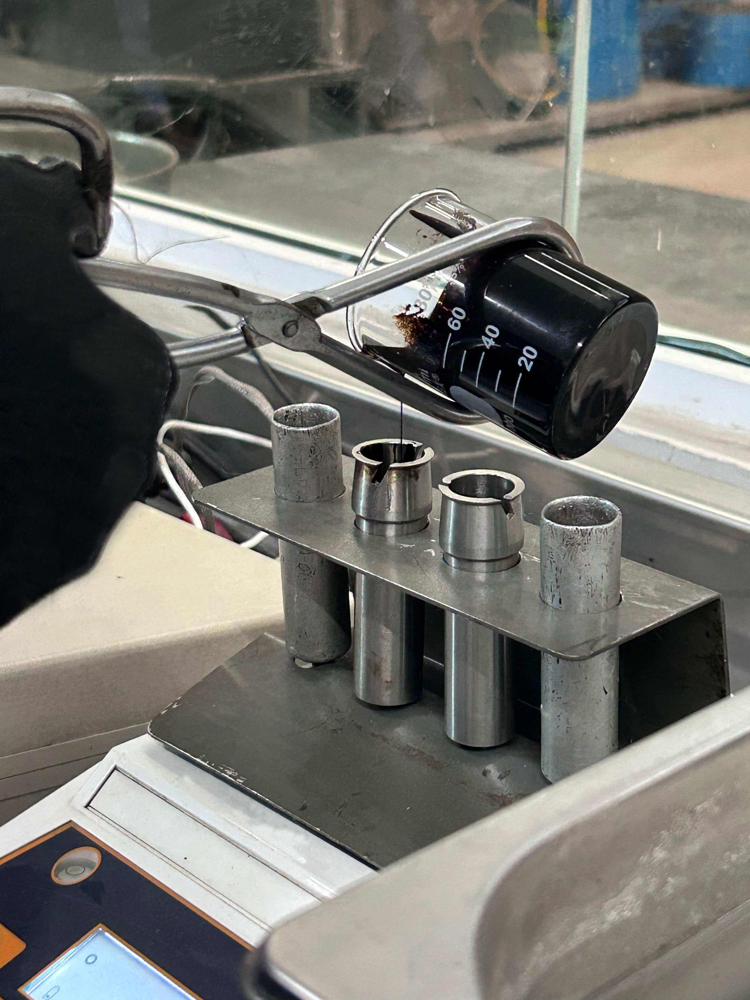
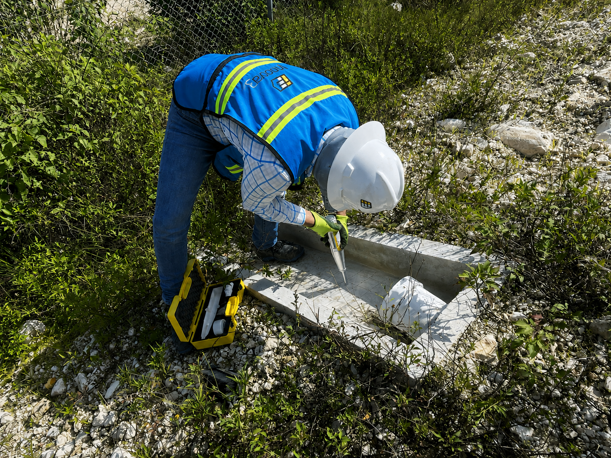
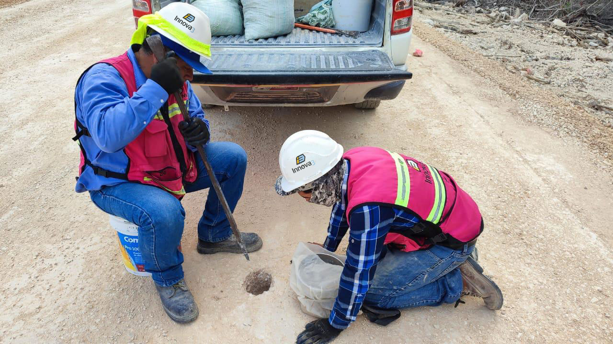
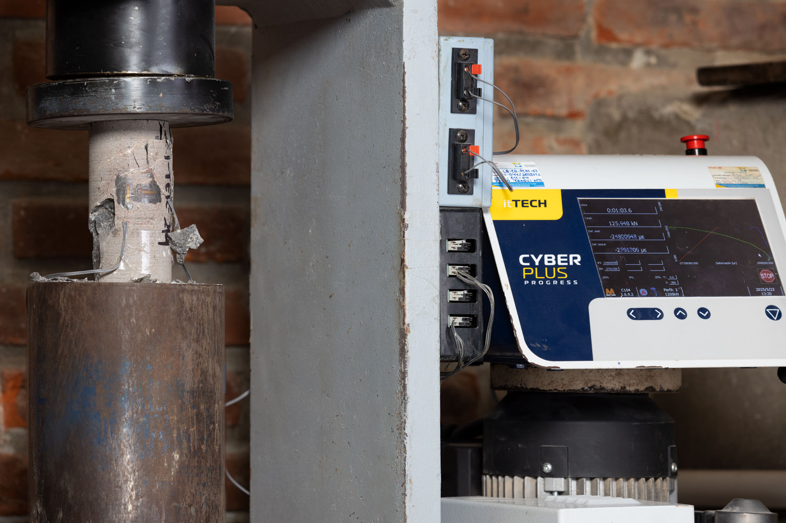

MEZCLAS ASFÁLTICAS
Diseñamos mezclas asfálticas a la medida de cada proyecto para maximizar su desempeño en campo, optimizar costos de construcción y prolongar la vida útil del pavimento. Nuestros diseños se desarrollan bajo metodologías reconocidas y cumplen con los estándares más exigentes de la industria.
- Mezclas por el método Marshall
- Mezclas por protocolo AMAAC Nivel I y II
- Mezclas asfálticas de Microcarpetas
Realizamos el control integral de calidad de las mezclas asfálticas mediante ensayos de laboratorio, controles de producción en planta y verificaciones en campo, asegurando que la mezcla conserve las propiedades definidas en su diseño y alcance el desempeño esperado durante su vida útil.
ASFALTOS Y EMULSIONES
Analizamos asfaltos y emulsiones para determinar el cumplimiento normativo y la vida útil esperada de la mezcla asfáltica.

CONCRETO HIDRÁULICO
Realizamos diseños de Concreto Hidráulico conforme al uso y especificaciones requeridas.
Verificamos que el concreto cumpla con las especificaciones de calidad y desempeño requeridas en cada etapa del proyecto, desde su colocación hasta el desarrollo de sus propiedades mecánicas, brindando información confiable para la toma de decisiones en obra.

AGREGADOS Y TERRACERÍAS
Ejecutamos el control de calidad de la compactación de capas granulares mediante pruebas en campo y ensayos especializados de laboratorio, verificando que cumplan con las propiedades físicas y mecánicas requeridas para su correcto desempeño.
- Prueba de placa estática
- Prueba de placa de carga
- Placa dinámica (LWD)
- Geogauge
- Prueba de huella


Asimismo, caracterizamos las propiedades físicas y mecánicas de los agregados destinados a diversas aplicaciones en la industria de la construcción, garantizando su calidad y cumplimiento con las especificaciones correspondientes.
- Pedraplén
- Terraplén
- Subrasante
- Subyacente
- Subbase hidráulica
- Base hidráulica
- Agregados para concreto hidráulico
- Agregados para mezcla asfáltica
- Subbalasto
- Balasto
ANÁLISIS DE ROCAS
Analizamos las propiedades mecánicas de muestras de roca.
- Tracción indirecta
- Compresión simple
- Modulo elástico
- Carga puntual

ANÁLISIS DE SUELOS
Caracterizamos las propiedades índice y mecánicas de los suelos para determinar capacidades de carga y diseño de cimentaciones.
- Ensaye triaxial
- Consolidación unidimensional
- Pruebas índice